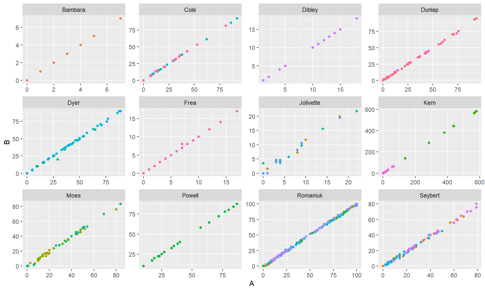
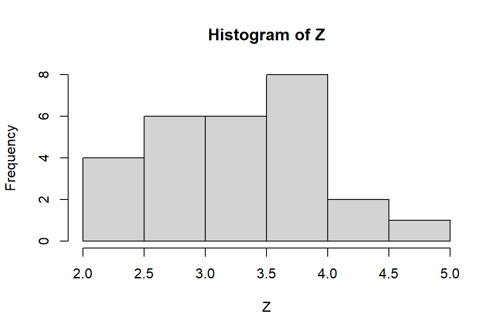

Reliability of UnGraphed single-case data: An example using the Shogren dataset
single-case design
inter-rater reliability
Author
admin
Published
October 23, 2013
In one example from my dissertation, I re-analyzed a systematic review by Shogren and colleagues, titled “The effect of choice-making as an intervention for problem behavior” (Shogren, et al., 2004). In order to do the analysis, I retrieved all of the original articles identified by the review, scanned in all of the graphs depicting the data, and used (actually, had an undergraduate use) a computer program called UnGraph to capture the data-points off of the graphs (see Shadish, et al., 2009 for details on this procedure).
As it turned out, Wim Van Den Noortgate and Patrick Onghena followed a similar procedure in analyzing the same systematic review (reported in Van Den Noorgate & Onghena, 2008). Wim and Patrick were kind enough to share their data so that I could calculate the reliability of this data extraction procedure, based on the two independent replications. After some initial data-munging, I arrived at a clean, merged dataset:
Study Case Setting Measure time choice Phase A B lowIntAxis
1 Bambara Al Dessert Protests 1 0 A 5 5 1
2 Bambara Al Dessert Protests 2 0 A 7 7 1
3 Bambara Al Dessert Protests 3 0 A 4 4 1
4 Bambara Al Dessert Protests 4 1 B 1 1 1
5 Bambara Al Dessert Protests 5 1 B 0 0 1
6 Bambara Al Dessert Protests 6 1 B 1 1 1
The variables are as follows:
Study - First author of original study included in the meta-analysis;
Case - Name of individual case;
Setting - some of the studies used multiple baselines on single individuals across multiple settings;
Measure - some of the studies used multiple outcome measures on each case;
time - sequential measurement occasion;
choice - indicator equal to one if the treatment condition allowed for choice;
Phase - Factor indicating sequential phases (some of the designs were treatment reversals, such as ABA or ABAB or ABABAB);
A - Wim’s outcome measurement;
B - my outcome measurement;
lowIntAxis - an idicator equal to one if the vertical axis of the graph was labeled with integers, and the axis maximum was <= 20.
The final variable distinguishes graphs that are particularly easy to capture. Wim/Patrick and I used slightly different exclusion criteria, so there are a total of 0 cases across 0 studies included in the merged dataset. To begin, here’s a plot of A versus B by study:
library(ggplot2)qplot(A, B, geom ="point", color = Case, data = Shogren) +facet_wrap( ~ Study, scales ="free") +theme(legend.position="none")
Warning: `qplot()` was deprecated in ggplot2 3.4.0.

Clearly the two measurements are very correlated. You’ll notice that the studies (and sometimes cases within studies) used several different outcome measurement scales, so the overall correlation between A and B (r = 0.999767) isn’t really the best approach. Furthermore, some of the variation in the outcomes is presumably due to differences between phases, and it would be better to calculate a reliability based on the residual variation within phases.
I accomplish this with a simple hierarchical model, fit separately to the data from each case. Denote the outcome as \(y_{ijk}\) for phase \(i = 1,...,P\), measurement occasion \(j = 1,...,n_i\), and replicate \(k = 1,2\). I model these outcomes as
\[y_{ijk} = \beta_i + \epsilon_{ij} + \nu_{ijk}\]
with the \(\beta\)’s fixed, \(\epsilon_{ij} \sim (0, \tau^2)\), and \(\nu_{ijk} \sim (0, \sigma^2)\). Reliability is then captured by the intra-class correlation \(\rho = \tau^2 / (\tau^2 + \sigma^2)\).
I calculate the reliabilities from each case using restricted maximum likelihood, then apply Fisher’s Z-transform:
library(reshape)library(plyr)Shogren_long <-melt(Shogren, measure.vars =c("A","B"), variable_name ="observer")Fisher_Z <-function(x) 0.5* (log(1+ x) -log(1- x))library(nlme)Z_ICC <-function(x, formula = value ~ Phase){ fit <-lme(formula, random =~1| time, data = x) tau.sq.ratio <-as.double(coef(fit$modelStruct$reStruct, FALSE)) rho <- tau.sq.ratio / (tau.sq.ratio +1) Z <-Fisher_Z(rho) df <-dim(x)[1] /2-length(fit$coefficients$fixed)return(c(rho = rho, Z = Z, df = df))}ICC <-ddply(Shogren_long, .(Study, Case, Setting, Measure, lowIntAxis), Z_ICC)
It turns out that 5 of 6 cases with lowIntAxis==1 are perfectly correlated. The remainder of my analysis focuses on the cases with lowIntAxis==0. Here’s a histogram of the Z-transformed correlations:
with(subset(ICC, lowIntAxis==0), hist(Z))

With only 2 replicates per measurement occasion, the large-sample variance of the intra-class correlation is equivalent to that of the usual Pearson correlation (see Hedges, Hedberg, & Kuyper, 2013), except that I use \(N - P\) in the denominator to account for the fact that separate means are estimated for each of the \(P\) phases: \[Var(\hat\rho) \approx \frac{(1 - \rho^2)^2}{N - P},\] where \(N = \sum_i n_i\). Applying Fisher’s Z transform stabilizes the variance, so that it is appropriate to use inverse variance weights of simply \(N - P\). Turning to a random-effects meta-analysis:
library(metafor)summary(rma_Z <-rma(yi = Z, vi =1/ df, data = ICC, subset = lowIntAxis==0))
Random-Effects Model (k = 27; tau^2 estimator: REML)
logLik deviance AIC BIC AICc
-26.1156 52.2313 56.2313 58.7475 56.7530
tau^2 (estimated amount of total heterogeneity): 0.3778 (SE = 0.1198)
tau (square root of estimated tau^2 value): 0.6146
I^2 (total heterogeneity / total variability): 88.15%
H^2 (total variability / sampling variability): 8.44
Test for Heterogeneity:
Q(df = 26) = 211.1324, p-val < .0001
Model Results:
estimate se zval pval ci.lb ci.ub
3.2596 0.1265 25.7670 <.0001 3.0117 3.5075 ***
---
Signif. codes: 0 '***' 0.001 '**' 0.01 '*' 0.05 '.' 0.1 ' ' 1
The average effect size corresponds to a reliability of 0.9970546 (95% CI: [0.9951684,0.9982051]). The reliabilities are heterogeneous, but because they are all at the extreme of the scale, the heterogeneity has little practical implication: approximating the population of reliabilities by a normal distribution, and based on the RML estimates, 84 percent of reliabilities will be greater than 0.9900. Though one could certainly imagine factors that might explain the variation in reliabilities–the resolution of the image file from which the data were captured, the size of the points used to graph each measurement, the number of outcomes represented on the same graph–it hardly seems worth exploring further because all of the reliabilities are so high. These results are very similar to those reported by Shadish, et al. (2009), who found a median reliability of 0.9993 based on a similar study of 91 single-case graphs.
References
Hedges, L. V, Hedberg, E. C., & Kuyper, A. M. (2012). The variance of intraclass correlations in three- and four-level models. Educational and Psychological Measurement. doi:10.1177/0013164412445193
Shadish, W. R., Brasil, I. C. C., Illingworth, D. A., White, K. D., Galindo, R., Nagler, E. D., & Rindskopf, D. M. (2009). Using UnGraph to extract data from image files: Verification of reliability and validity. Behavior Research Methods, 41(1), 177-83. doi:10.3758/BRM.41.1.177
Shogren, K. A., Faggella-Luby, M. N., Bae, S. J., & Wehmeyer, M. L. (2004). The effect of choice-making as an intervention for problem behavior. Journal of Positive Behavior Interventions, 6(4), 228-237.
Van den Noortgate, W., & Onghena, P. (2008). A multilevel meta-analysis of single-subject experimental design studies. Evidence-Based Communication Assessment and Intervention, 2(3), 142-151. doi:10.1080/17489530802505362
Source Code
---title: 'Reliability of UnGraphed single-case data: An example using the Shogren dataset'date: '2013-10-23'authors: admincategories:- single-case design- inter-rater reliabilitycode-tools: true---In one example from my dissertation, I re-analyzed a systematic review by Shogren and colleagues, titled "The effect of choice-making as an intervention for problem behavior" (Shogren, et al., 2004). In order to do the analysis, I retrieved all of the original articles identified by the review, scanned in all of the graphs depicting the data, and used (actually, had an undergraduate use) a computer program called [UnGraph](http://www.biosoft.com/w/ungraph.htm) to capture the data-points off of the graphs (see Shadish, et al., 2009 for details on this procedure). As it turned out, [Wim Van Den Noortgate](http://www.kuleuven.be/wieiswie/en/person/00006844) and [Patrick Onghena](http://www.kuleuven.be/wieiswie/en/person/00015697) followed a similar procedure in analyzing the same systematic review (reported in Van Den Noorgate & Onghena, 2008). Wim and Patrick were kind enough to share their data so that I could calculate the reliability of this data extraction procedure, based on the two independent replications. After some initial data-munging, I arrived at a [clean, merged dataset]({{site.url}}/data/Shogren_data_merged.csv): ```{r}Shogren <-read.csv("http://jepusto.com/data/Shogren_data_merged.csv")head(Shogren)```The variables are as follows:* Study - First author of original study included in the meta-analysis;* Case - Name of individual case;* Setting - some of the studies used multiple baselines on single individuals across multiple settings;* Measure - some of the studies used multiple outcome measures on each case;* time - sequential measurement occasion;* choice - indicator equal to one if the treatment condition allowed for choice;* Phase - Factor indicating sequential phases (some of the designs were treatment reversals, such as ABA or ABAB or ABABAB);* A - Wim's outcome measurement;* B - my outcome measurement;* lowIntAxis - an idicator equal to one if the vertical axis of the graph was labeled with integers, and the axis maximum was <= 20. The final variable distinguishes graphs that are particularly easy to capture. Wim/Patrick and I used slightly different exclusion criteria, so there are a total of `{r} nlevels(Shogren$Case)` cases across `{r} nlevels(Shogren$Study)` studies included in the merged dataset. To begin, here's a plot of A versus B by study: ```{r, fig.width = 10, fig.height = 6}library(ggplot2)qplot(A, B, geom = "point", color = Case, data = Shogren) + facet_wrap( ~ Study, scales = "free") + theme(legend.position="none")```Clearly the two measurements are very correlated. You'll notice that the studies (and sometimes cases within studies) used several different outcome measurement scales, so the overall correlation between A and B (r = `{r} with(Shogren, cor(A,B))`) isn't really the best approach. Furthermore, some of the variation in the outcomes is presumably due to differences between phases, and it would be better to calculate a reliability based on the residual variation within phases. I accomplish this with a simple hierarchical model, fit separately to the data from each case. Denote the outcome as $y_{ijk}$ for phase $i = 1,...,P$, measurement occasion $j = 1,...,n_i$, and replicate $k = 1,2$. I model these outcomes as $$y_{ijk} = \beta_i + \epsilon_{ij} + \nu_{ijk}$$with the $\beta$'s fixed, $\epsilon_{ij} \sim (0, \tau^2)$, and $\nu_{ijk} \sim (0, \sigma^2)$. Reliability is then captured by the intra-class correlation $\rho = \tau^2 / (\tau^2 + \sigma^2)$. I calculate the reliabilities from each case using restricted maximum likelihood, then apply Fisher's Z-transform:```{r, message=FALSE}library(reshape)library(plyr)Shogren_long <- melt(Shogren, measure.vars = c("A","B"), variable_name = "observer")Fisher_Z <- function(x) 0.5 * (log(1 + x) - log(1 - x))library(nlme)Z_ICC <- function(x, formula = value ~ Phase){ fit <- lme(formula, random = ~ 1 | time, data = x) tau.sq.ratio <- as.double(coef(fit$modelStruct$reStruct, FALSE)) rho <- tau.sq.ratio / (tau.sq.ratio + 1) Z <- Fisher_Z(rho) df <- dim(x)[1] / 2 - length(fit$coefficients$fixed) return(c(rho = rho, Z = Z, df = df))}ICC <- ddply(Shogren_long, .(Study, Case, Setting, Measure, lowIntAxis), Z_ICC)```It turns out that `{r} with(ICC, sum(rho==1 & lowIntAxis==1))` of `{r} sum(ICC$lowIntAxis)` cases with lowIntAxis==1 are perfectly correlated. The remainder of my analysis focuses on the cases with lowIntAxis==0. Here's a histogram of the Z-transformed correlations:```{r, fig.width = 6, fig.height = 4}with(subset(ICC, lowIntAxis==0), hist(Z))```With only 2 replicates per measurement occasion, the large-sample variance of the intra-class correlation is equivalent to that of the usual Pearson correlation (see Hedges, Hedberg, & Kuyper, 2013), except that I use $N - P$ in the denominator to account for the fact that separate means are estimated for each of the $P$ phases: $$Var(\hat\rho) \approx \frac{(1 - \rho^2)^2}{N - P},$$ where $N = \sum_i n_i$. Applying Fisher's Z transform stabilizes the variance, so that it is appropriate to use inverse variance weights of simply $N - P$. Turning to a random-effects meta-analysis:```{r, message=FALSE}library(metafor)summary(rma_Z <- rma(yi = Z, vi = 1 / df, data = ICC, subset = lowIntAxis==0))``````{r, include=FALSE}Z_inv <- function(x) (exp(2 * x) - 1) / (exp(2 * x) + 1)```The average effect size corresponds to a reliability of `{r} Z_inv(rma_Z$b)` (95% CI: [`{r} Z_inv(rma_Z$ci.lb)`,`{r} Z_inv(rma_Z$ci.ub)`]). The reliabilities are heterogeneous, but because they are all at the extreme of the scale, the heterogeneity has little practical implication: approximating the population of reliabilities by a normal distribution, and based on the RML estimates, `{r} with(rma_Z, 100 * round(1 - pnorm((Fisher_Z(0.99) - b) / sqrt(tau2)), 2))` percent of reliabilities will be greater than 0.9900. Though one could certainly imagine factors that might explain the variation in reliabilities--the resolution of the image file from which the data were captured, the size of the points used to graph each measurement, the number of outcomes represented on the same graph--it hardly seems worth exploring further because all of the reliabilities are so high. These results are very similar to those reported by Shadish, et al. (2009), who found a median reliability of 0.9993 based on a similar study of 91 single-case graphs.# References* Hedges, L. V, Hedberg, E. C., & Kuyper, A. M. (2012). The variance of intraclass correlations in three- and four-level models. Educational and Psychological Measurement. doi:10.1177/0013164412445193* Shadish, W. R., Brasil, I. C. C., Illingworth, D. A., White, K. D., Galindo, R., Nagler, E. D., & Rindskopf, D. M. (2009). Using UnGraph to extract data from image files: Verification of reliability and validity. Behavior Research Methods, 41(1), 177-83. doi:10.3758/BRM.41.1.177* Shogren, K. A., Faggella-Luby, M. N., Bae, S. J., & Wehmeyer, M. L. (2004). The effect of choice-making as an intervention for problem behavior. Journal of Positive Behavior Interventions, 6(4), 228-237.* Van den Noortgate, W., & Onghena, P. (2008). A multilevel meta-analysis of single-subject experimental design studies. Evidence-Based Communication Assessment and Intervention, 2(3), 142-151. doi:10.1080/17489530802505362